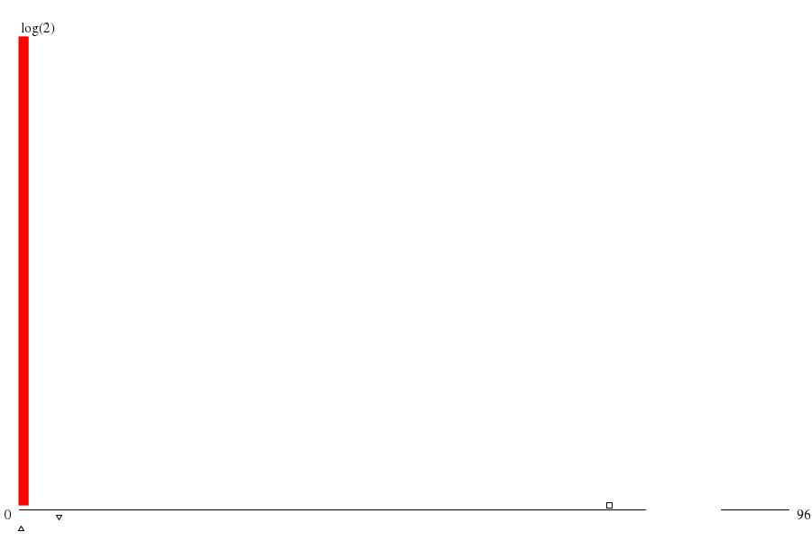

|  | ||
| maxs | mins | |
|
(10.sum) 966 |
(21.sum) 1 |
|
|
(15.sum) 962 |
(0.summ) 2 |
|
|
(5.summ) 927 |
(22.sum) 2 |
|
|
(16.sum) 885 |
(2.summ) 716 |
|
|
(14.sum) 882 |
(20.sum) 768 |
| memory (MB) | mode ▵ | μ ▫ | (μ+σ)/μ | 1st alloc. max value | 1st alloc. max through ▿ | 1st alloc. min waste |
| -- 2.097 xE6 |
-- 775.946 xE6 |
-- 1.403 |
throu: 1.000 waste: 10.50%
alloc: 1.013 xE9 |
throu: 1.695 waste: 14.86%
alloc: 52.429 xE6 |
throu: 1.000 waste: 10.50%
alloc: 1.013 xE9 |